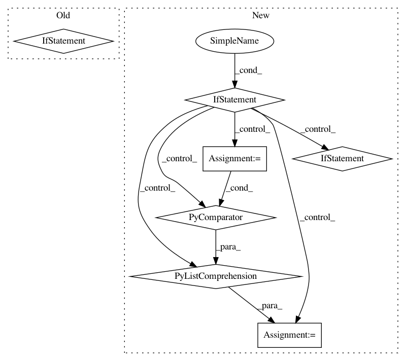

20fe7b4cbf62f6223241d6cafc6e8ea48701efdd,softlearning/misc/nn.py,,feedforward_model,#Any#Any#Any#Any#Any#Any#,4
Before Change
*args,
**kwargs):
if isinstance(inputs, (list, tuple)):
concatenated = (
tf.keras.layers.Concatenate(axis=-1)(inputs)
if len(inputs) > 1
else inputs[0])
else:
concatenated = inputs
out = concatenated
After Change
name=None,
*args,
**kwargs):
if not isinstance(input_shapes[0], (list, tuple)):
raise NotImplementedError(
"TODO(hartikainen): feedforward_model currently expects a list of"
" shapes as an input. It might be possible that you passed in a"
" list/tuple of dimension objects. Those should be accepted"
" but have not yet been implemented.")
inputs = [
tf.keras.layers.Input(shape=input_shape)
for input_shape in input_shapes
]
if len(inputs) > 1:
out = tf.keras.layers.Concatenate(axis=-1)(inputs)
else:
In pattern: SUPERPATTERN
Frequency: 3
Non-data size: 7
Instances
Project Name: rail-berkeley/softlearning
Commit Name: 20fe7b4cbf62f6223241d6cafc6e8ea48701efdd
Time: 2018-10-22
Author: hartikainen@berkeley.edu
File Name: softlearning/misc/nn.py
Class Name:
Method Name: feedforward_model
Project Name: apple/coremltools
Commit Name: d1e6e624ef891543c5bba32bb0a696d350714693
Time: 2019-08-20
Author: smq@apple.com
File Name: coremltools/models/utils.py
Class Name:
Method Name: _convert_nn_spec_to_half_precision
Project Name: CyberZHG/keras-bert
Commit Name: d55d201b303b4186670ada7c7ea462e0c481d6d6
Time: 2019-07-05
Author: 853842+CyberZHG@users.noreply.github.com
File Name: keras_bert/bert.py
Class Name:
Method Name: get_model